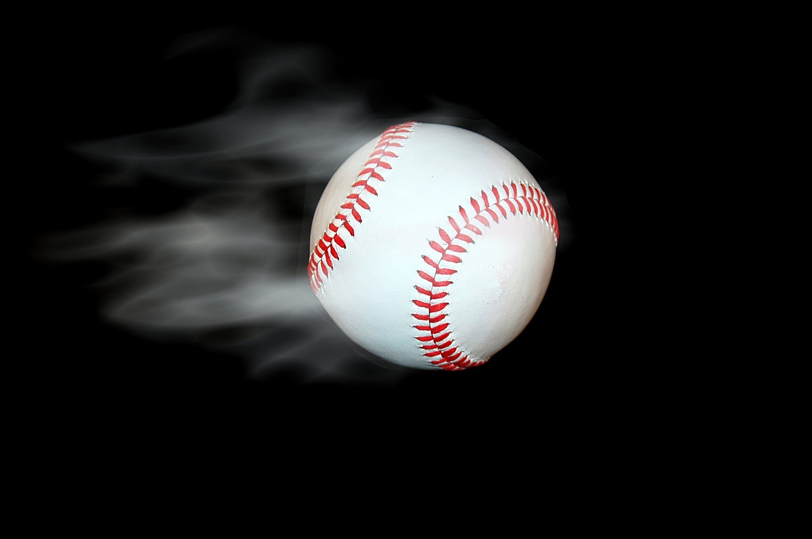

Extend Yourself - Code.org: Create an Animation
 Add Special Effects
Add Special Effects
Try seeing what special effects you can add to your animation! You may want to try adding music as your ball is bouncing. You could make a failure sound if it hits the edge of the screen and have the ball fall to the ground and stop bouncing. Is there a way you could add trails to your ball as it bounces? You could even try having your ball randomly change to a different sprite. Get creative with it to see what you can do!
 Create a Different Animation
Think of other animations that you could make with the sprites available to you. Maybe a flying bee, a dog walking, or even a magic wand “granting” wishes! See how your code changes with the animation. Is it easier or harder?
Make Your Ball User Controlled
Some animations or simple games are controlled by the user when they move the mouse or press arrow keys. See if you can make your ball bounce based off what the user chooses. You could even try adding a paddle sprite to turn it into a game.
Add More Balls
Your animation only has one bouncing ball. Try to add more to see what will happen. It could be the same type of ball or all different types. Does something happen when they collide with one another? Do they all bounce at the same time or is it random?
[Image Missing]